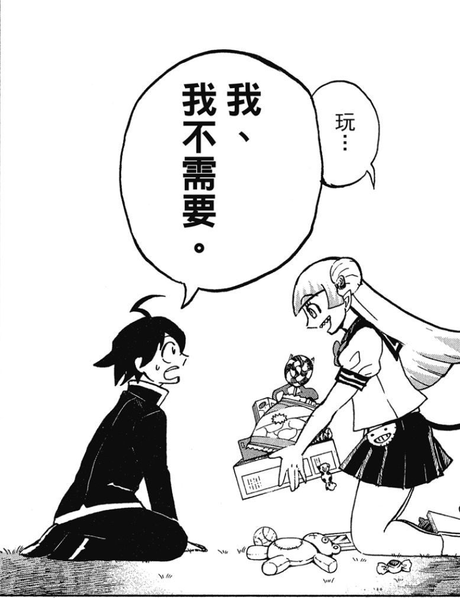
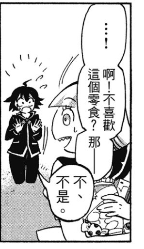
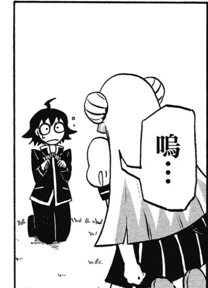
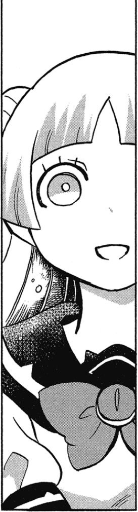
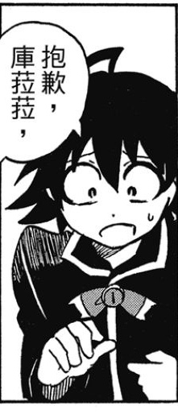
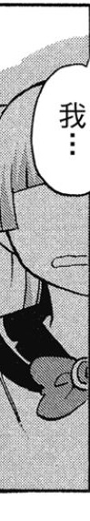

镜头 01 · 热情提议4s
入间同学入魔了卷 01
页面、进度和创作，都从这里开始。
已选 1 页
漫画来源 第 094 页
原作完整页
漫画分格 6 格






镜头编排 4 镜头
01
热情提议，慌张拒绝分格 01 · 双人全景
4s02
发愣，翻找零食分格 02—03 · 动作镜头
8s03
道歉与沉默分格 04—05 · 双人近景
4s04
抽泣与手足无措分格 06 · 过肩远景
4s6 格内容，保留完整情绪
关键画面与视频 5 张 / 4 段
镜头 02 · 发愣到慌乱8s
镜头 03 · 道歉与沉默需修订
Reviewer · 00:00.7 意外切镜这一页还没有制作记录